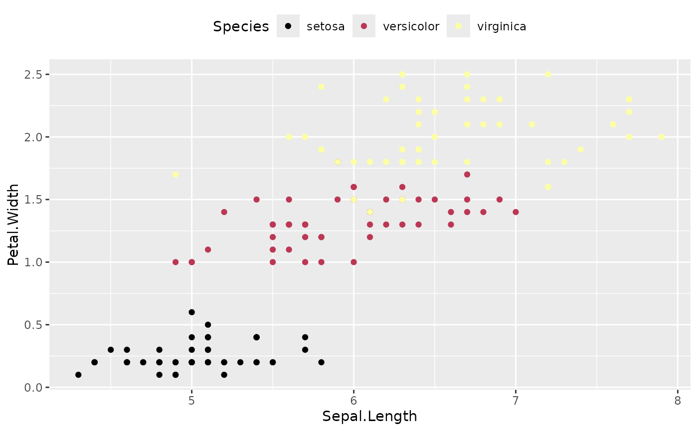

These helper functions are built on top of ggplot2::layer() and can be
used to add geom(s), whose type and content are specified as a list.
geom_from_list(x, ...) geoms_from_list(x, ...)
Arguments
| x | A list containing:
For |
|---|---|
| ... | Additional arguments passed to |
Examples
library(ggplot2) # Example 1 (basic geoms and labels) -------------------------- l1 <- list( geom = "point", data = mtcars, aes = list(x = "mpg", y = "wt", size = "hp", color = "hp"), show.legend = c("size" = FALSE) ) l2 <- list( geom = "labs", title = "A Title" ) ggplot() + geom_from_list(l1) + geom_from_list(l2)# Example 2 (Violin, boxplots, ...) -------------------------- l1 <- list( geom = "violin", data = iris, aes = list(x = "Species", y = "Sepal.Width") ) l2 <- list( geom = "boxplot", data = iris, aes = list(x = "Species", y = "Sepal.Width"), outlier.shape = NA ) l3 <- list( geom = "jitter", data = iris, width = 0.1, aes = list(x = "Species", y = "Sepal.Width") ) ggplot() + geom_from_list(l1) + geom_from_list(l2) + geom_from_list(l3)# Example 3 (2D density) -------------------------- ggplot() + geom_from_list(list( geom = "density_2d", data = iris, aes = list(x = "Sepal.Width", y = "Petal.Length") ))ggplot() + geom_from_list(list( geom = "density_2d_filled", data = iris, aes = list(x = "Sepal.Width", y = "Petal.Length") ))ggplot() + geom_from_list(list( geom = "density_2d_polygon", data = iris, aes = list(x = "Sepal.Width", y = "Petal.Length") ))ggplot() + geom_from_list(list( geom = "density_2d_raster", data = iris, aes = list(x = "Sepal.Width", y = "Petal.Length") )) + scale_x_continuous(expand = c(0, 0)) + scale_y_continuous(expand = c(0, 0))# Example 4 (facet and coord flip) -------------------------- ggplot(iris, aes(x = Sepal.Length, y = Petal.Width)) + geom_point() + geom_from_list(list(geom = "hline", yintercept = 2)) + geom_from_list(list(geom = "coord_flip")) + geom_from_list(list(geom = "facet_wrap", facets = "~ Species", scales = "free"))# Example 5 (theme and scales) -------------------------- ggplot(iris, aes(x = Sepal.Length, y = Petal.Width, color = Species)) + geom_point() + geom_from_list(list(geom = "scale_color_viridis_d", option = "inferno")) + geom_from_list(list(geom = "theme", legend.position = "top"))ggplot(iris, aes(x = Sepal.Length, y = Petal.Width, color = Species)) + geom_point() + geom_from_list(list(geom = "scale_color_material_d", palette = "rainbow")) + geom_from_list(list(geom = "theme_void"))# Example 5 (Smooths and side densities) -------------------------- ggplot(iris, aes(x = Sepal.Length, y = Petal.Width)) + geom_from_list(list(geom = "point")) + geom_from_list(list(geom = "smooth", color = "red")) + geom_from_list(list(aes = list(x = "Sepal.Length"), geom = "ggside::geom_xsidedensity")) + geom_from_list(list(geom = "ggside::scale_xsidey_continuous", breaks = NULL))#> #> #># Example 6 (ggraph) -------------------------- if (require("tidygraph", quietly = TRUE)) { # Prepare graph nodes <- data.frame(name = c("Hadley", "David", "Romain", "Julia")) edges <- data.frame(from = c(1, 1, 1, 2, 3, 3, 4, 4, 4), to = c(2, 3, 4, 1, 1, 2, 1, 2, 3)) data <- tidygraph::tbl_graph(nodes = nodes, edges = edges) library(ggraph) ggraph(data, layout = "kk") + geom_from_list(list(geom = "ggraph::geom_edge_arc")) + geom_from_list(list(geom = "ggraph::geom_node_point", size = 10)) + geom_from_list(list(geom = "ggraph::geom_node_label", aes = list(label = "name"))) }#> #>#> #> #>